Here are the Top 5 Sights to visit in Southeast Asia!
#1 Wat Pho - Bangkok, Thailand Wat Pho (the Temple of the Reclining Buddha) is a must-see for any first-time visitor to Bangkok. It is one of the largest Buddhist temple complexes in the city and famed for its gigantic reclining Buddha statue that measures 46 meters long and is covered in gold. The temple compound is also the national headquarters for the teaching and preservation of traditional Thai medicine, including Thai massage, a mandate legislated by Rama III when the tradition was in danger of extinction. 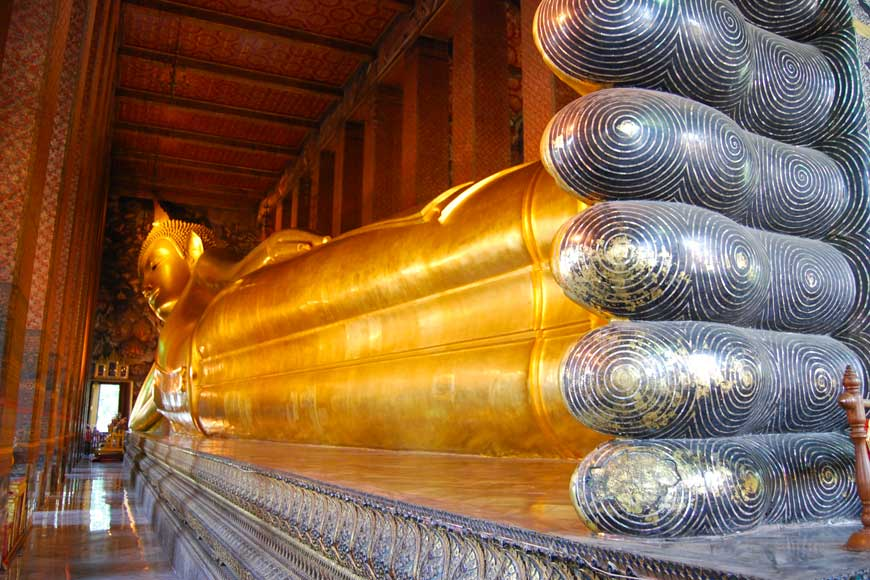 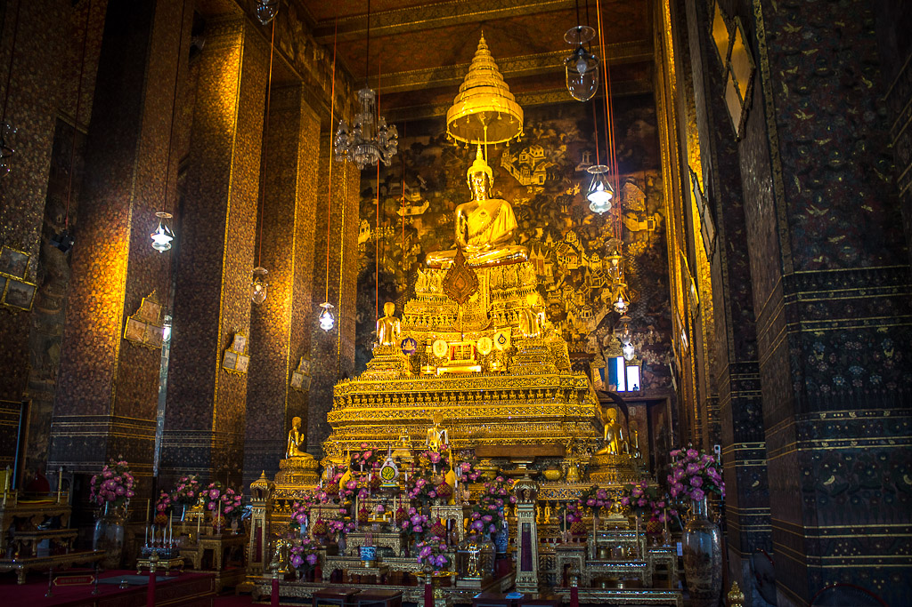 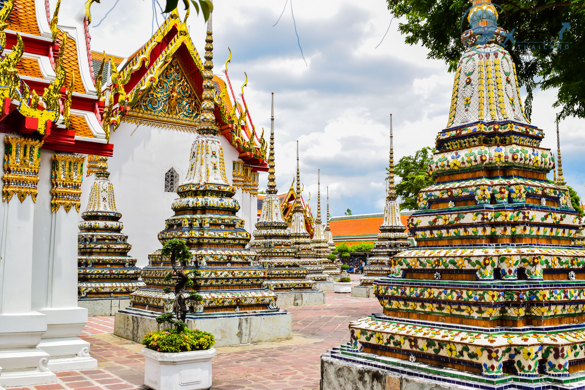
#2 Old Town Hoi An - Hoi An, Vietnam Classified as a world heritage site by the UNESCO, Hoi An’s townscapes charmingly document the city’s history as a trading port. Tourists can expect to observe the blending of Chinese, Japanese and European influences with the city’s Indigenous culture just by strolling through the streets of Hoi An. Popular places to visit include the An Bang Beach, Museum of Trade Ceramics and Hoi An’s Riverside. 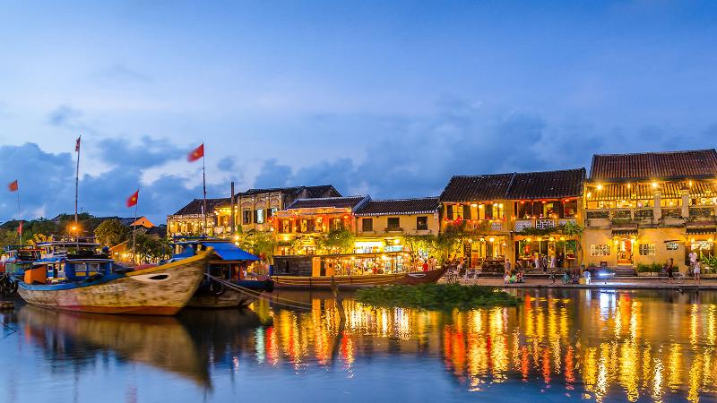 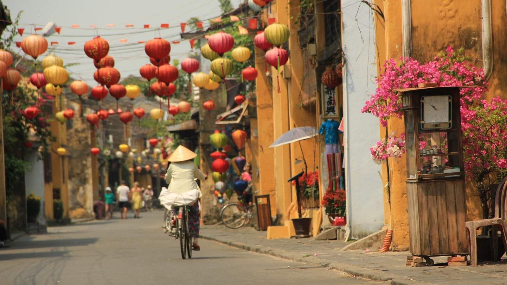 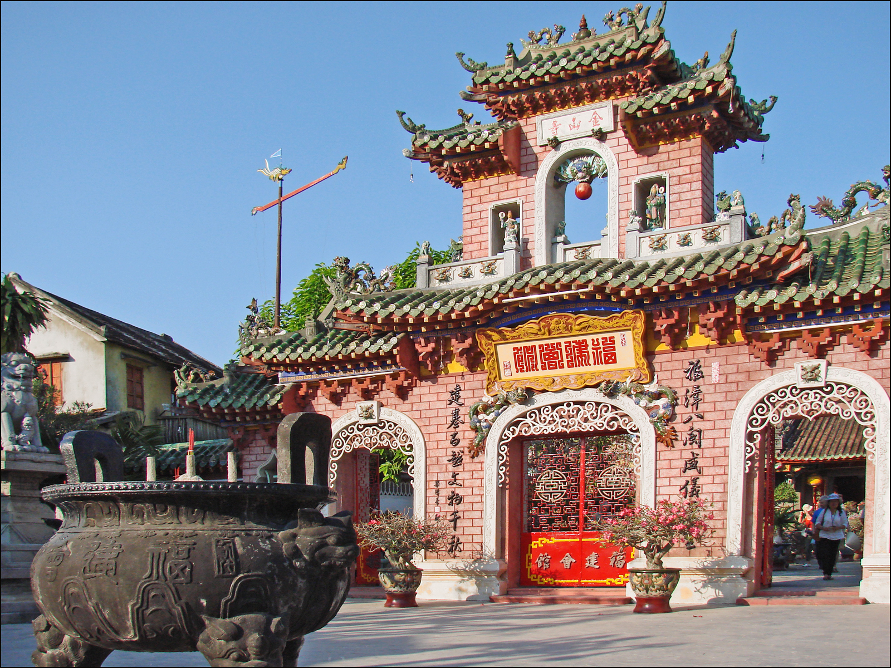
#3 Old Georgetown Streets - Penang, Malaysia Simultaneously known for its vibrant Chinese culture and its well-preserved colonial roots, Georgetown, a UNESCO World Cultural Heritage Site, seamlessly bridges Malaysia’s colonial history with its multicultural future. Visitors can either plan for a day trip to take in Georgetown’s Chinese-influenced shopping and eating streets or an overnight stay to enjoy the city’s many attractions, such as the Penang Botanic Gardens, Islamic Museum or Kuan Yin Temple. 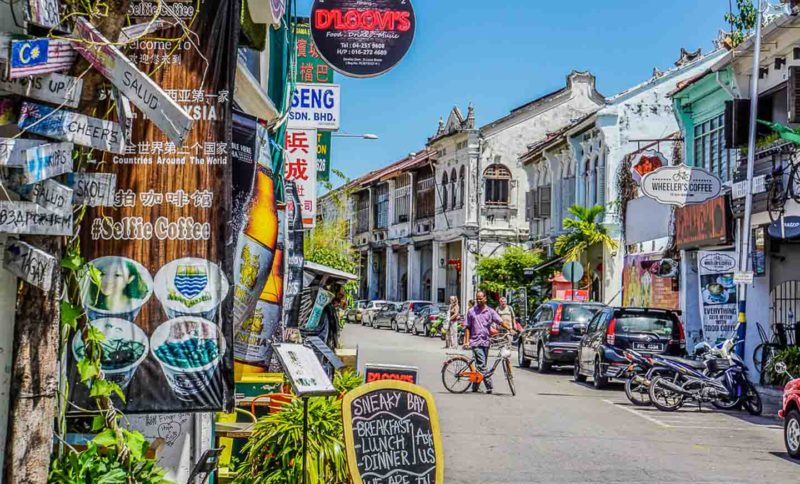 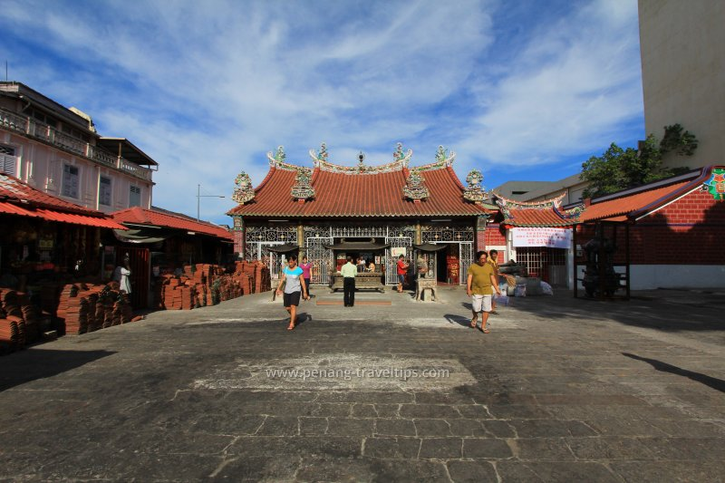 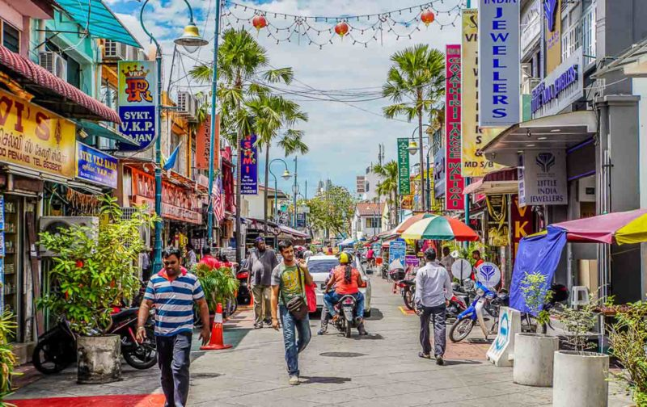
#4 Ifugao Rice Terraces - Banaue, Philippines Recognized by the UNESCO on their world heritage list, the Ifugao Rice Terraces, which were built and maintained by the Ifugao people, will inspire visitors to reconsider the mundanity of farming with a newfound understanding towards the creativity, innovation and beauty of agriculture. Environmentally-attuned visitors will no doubt enjoy Ifugao’s sophisticated, yet natural mingling of the cultural with the pastoral. Although the Ifugao Rice Terraces can be difficult to reach by travellers, it is a site worth visiting if one wishes to step into a magical time and place. 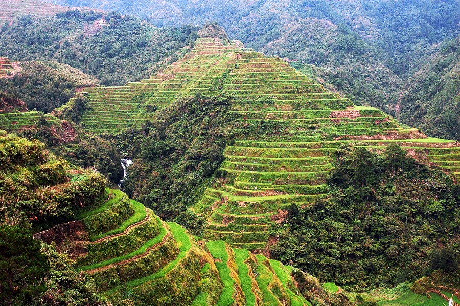 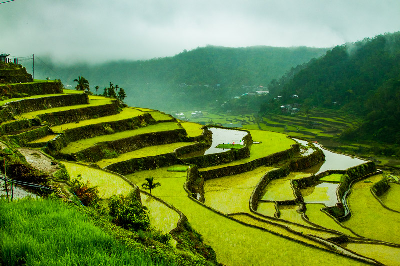 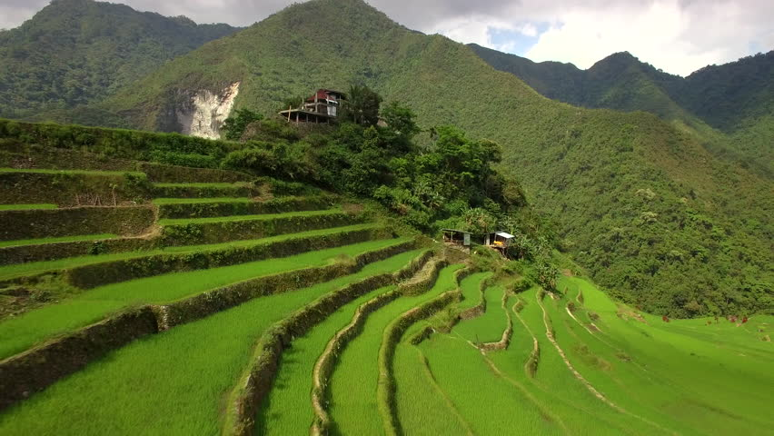
#5 Wat Arun - Bangkok, Thailand Regarded as one of Thailand’s most mesmerizing temples, Wat Arun is a must-visit destination for culturally-curious sightseers. Visitors to Wat Arun will not only be astonished by its highly-intricate architecture, they will also be spellbound by the temple’s dignified posture over the waters of the Chao Phraya River. Easily accessible by boat, Wat Arun is the perfect destination for watching a sunrise or a sunset. 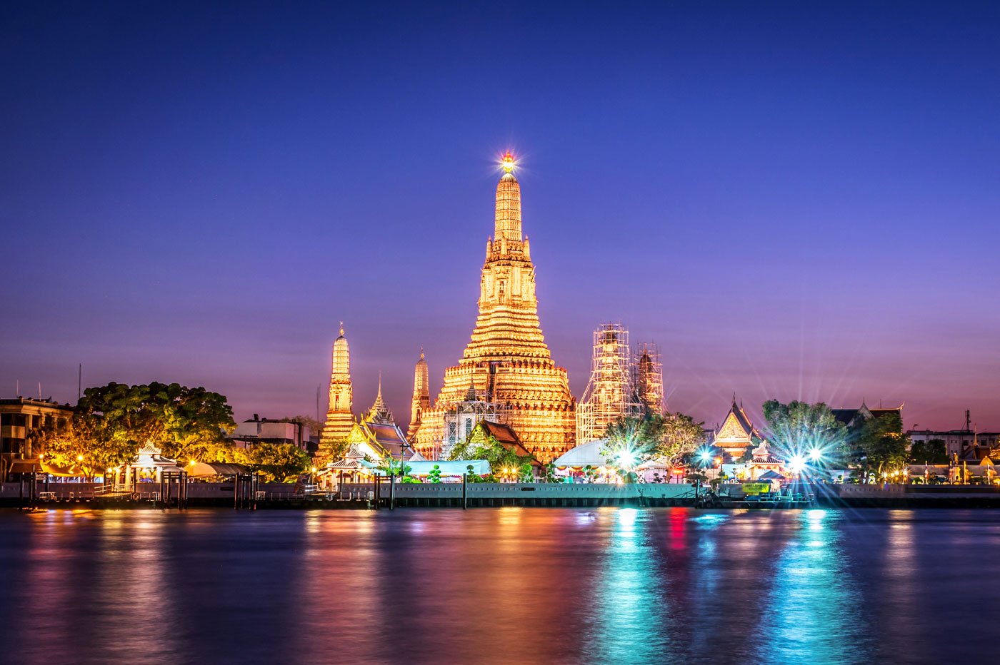 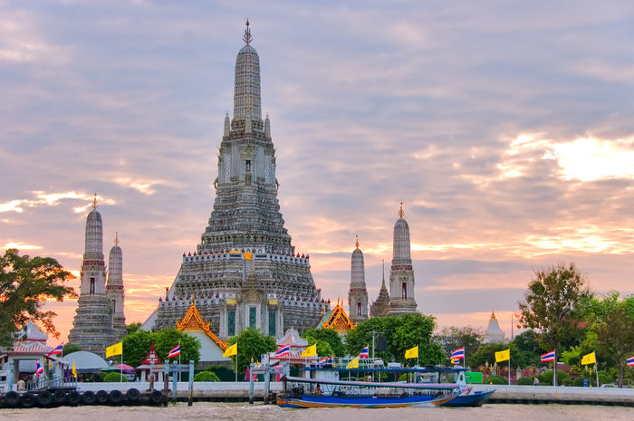 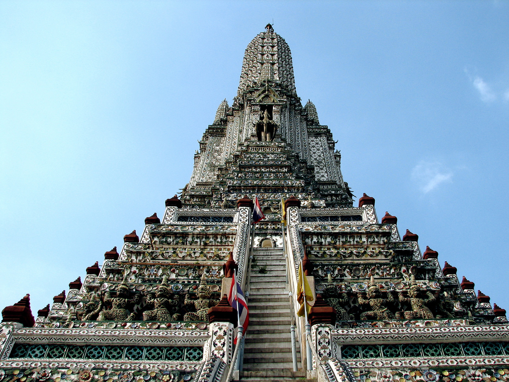